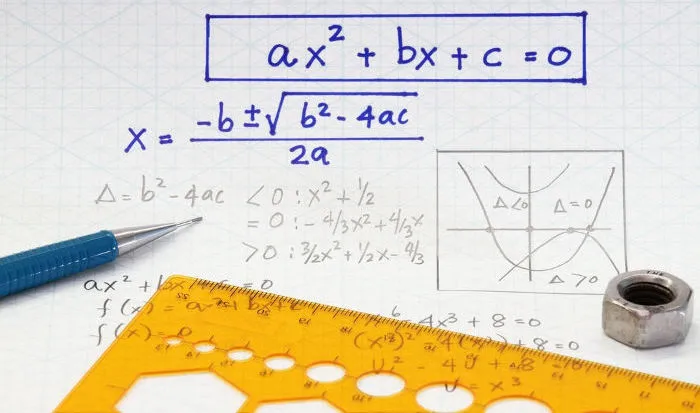
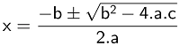
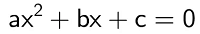
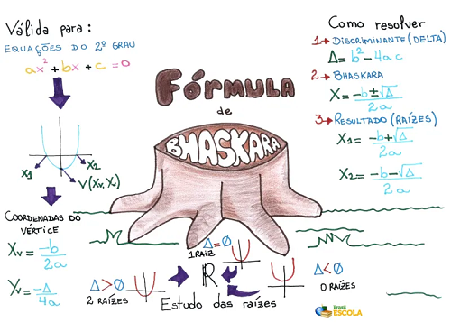
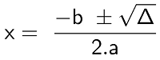
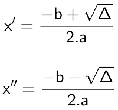
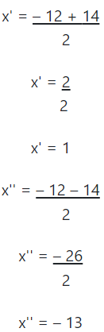

Fórmula de Bhaskara
O que é a Bhaskara?
A fórmula de Bhaskara é um método resolutivo para equações do segundo grau utilizado para
encontrar raízes a partir dos coeficientes da equação.

A fórmula de Bhaskara é um método resolutivo para equações do segundo grau cujo nome
homenageia o grande matemático indiano que a demonstrou. Essa fórmula nada mais é do que um
método para encontrar as raízes reais de uma equação do segundo grau fazendo uso apenas de
seus coeficientes. Vale lembrar que coeficiente é o número que multiplica uma incógnita em
uma equação.
Em sua forma original, a fórmula de Bhaskara é dada pela seguinte expressão:

Para utilizar essa fórmula, é necessário lembrar que toda equação do segundo grau deve ser
escrita da seguinte maneira:

Os coeficientes dessa equação são os números que ocupam o lugar de “a”, de “b” e de “c”.
Portanto, o coeficiente “a” é o número que multiplica x²; o coeficiente “b” é o número que
multiplica x; e o coeficiente “c” é o número que não multiplica incógnita.
Mapa Mental: Fórmula de Bháskara

Como resolver equações do segundo grau com a fórmula de Bhaskara?
Resolver uma equação do segundo grau é encontrar os valores de x (ou da incógnita proposta)
que fazem com que essa equação seja igual a zero.
O método resolutivo de Bhaskara apenas exige que o valor numérico de cada coeficiente seja
substituído na fórmula de Bhaskara. Após isso, basta realizar as operações matemáticas
indicadas pela fórmula para obter as raízes da equação. Contudo, esse
método costuma ser
dividido em três etapas para facilitar a compreensão por parte dos alunos.
Etapa 1: Calcular discriminante
Discriminante é a expressão presente dentro da raiz na fórmula de Bhaskara. É comumente
representado pela letra grega Δ (Delta) e recebe esse nome pelo fato de discriminar os
resultados de uma equação da seguinte maneira:
Δ < 0, então a equação não possui resultados reais;
Δ = 0, então a equação possui apenas um
resultado real ou possui dois resultados iguais (essas duas afirmações são
equivalentes);
Δ > 0, então a equação possui dois resultados distintos reais.
Portanto, para calcular as raízes de uma equação do segundo grau,
primeiramente calcule
o valor numérico de Δ.
Etapa 2: Substitua discriminante e coeficientes na fórmula de Bhaskara
Geralmente a fórmula de Bhaskara é ensinada apenas da seguinte maneira:

Nessa etapa, basta substituir os valores de Δ e dos coeficientes da equação do segundo grau
na fórmula acima.
Etapa 3: Calcule as raízes da equação
Para essa última etapa, note na fórmula de Bhaskara que
existe um sinal
“±”. Esse sinal indica que devem ser realizados dois cálculos. O primeiro para o caso em que
o número que o segue seja positivo e o segundo para o caso em que o número que o segue seja
negativo.
É comum nomear cada um desses resultados como x' e x'' ou x1 e x2. Observe:

Exemplo
Calcule as raízes da equação x² = 12x - 13 = 0
Utilizando a
fórmula de Bhaskara, separe os coeficientes da
equação e
realize o primeiro passo.
Δ = b² – 4ac
Δ = 12² – 4·1·(– 13)
Δ = 144 + 52
Δ = 196
Tendo em mãos o valor de Δ, realize o segundo passo:
Por fim, realize o terceiro passo para encontrar as raízes da equação do segundo grau.

Portanto, as raízes da equação x² + 12x – 13 = 0 são 1 e – 13.
Exercícios sobre Bhaskara
Resolva a lista de exercícios sobre fórmula de Bhaskara e tire suas dúvidas com exercícios resolvidos
Questão 1
Utilizando a fórmula de Bhaskara, determine as raízes da equação 2x² - 7x + 3 = 0
Questão 2
O conjunto solução que torna a equação x² + 5x - 14 = 0 verdadeira é
A) S={1,7}
B) S={3,4}
C) )S={2, -7}.
D) S={4,5}
E) S={8,3}
Questão 3
Determine os valores de x que satisfaçam a equação (4 - x)(3 + x) = 0
Questão 4
Sendo a seguinte equação do segundo grau, 3x² + 2x - 8 = 0, determine o produto entre as raízes.
Questão 5
Classifique as equações que possuem raízes reais.
Respostas:
Questão 1
Questão 2
Alternativa C
Os coeficientes são:
a = 1
b = 5
c = -14
Determinando o delta
Utilizando a fórmula de Bhaskara
O conjunto solução da equação é S={2, -7}.
Questão 3
Utilizando a propriedade distributiva da multiplicação, temos:

Os termos da equação do segundo grau são:
a = -1
b = 1
c = 12
Calculando o delta

Utilizando a fórmula de Bhaskara para determinar as raízes da equação:
Os valores de x que satisfazem a equação são x = -3 e x = 4.
Questão 4
Resposta correta: -8/3
Determinando as raízes da equação através da fórmula de Bhaskara
Os coeficientes são:
a = 3
b = 2
c = -8
Delta
Cálculo das raízes
Determinando o produto entre as raízes.
Questão 5
Respostas corretas: II, III e IV.
Não há raízes reais em equações com incremento negativo pois, na fórmula de Bhaskara ele é o radicando de uma raiz quadrada e, não existe raiz quadrada de números negativos nos números reais.
Delta negativo, portanto I não possui solução real.
Delta positivo, portanto II possui solução real.
Delta negativo, portanto III não possui resolução real.
Delta positivo, portanto IV possui solução real.